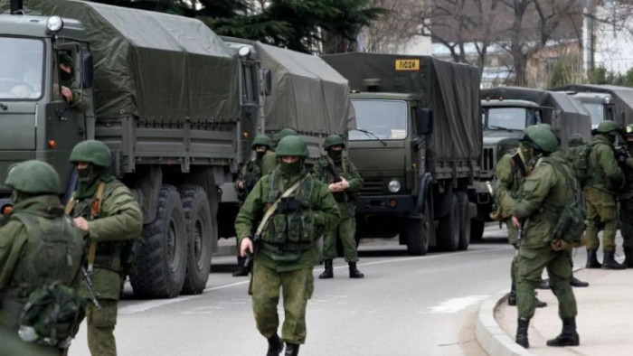

Crise na Europa Central: Polônia é Invadida por Forças Russas e Bielorrussas
"A Polônia é o primeiro bastião imperialista da europa, deve ser derrubado a qualquer custo" -Vladimir Putin
Tauan Heredias
Geopolítica Hoje | Vienna (AUS) | 18 de Janeiro de 2024
